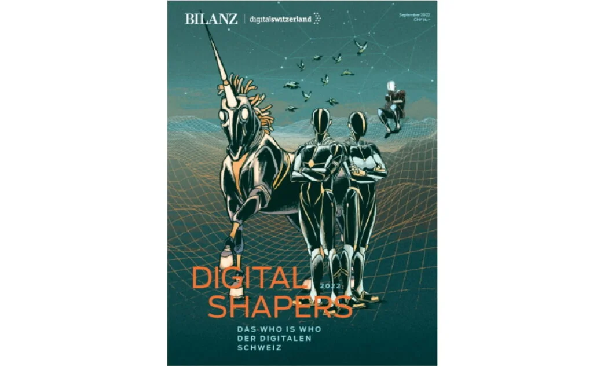

In the September 2022 issue of Digital Shapers magazine published in
cooperation with Digitalswitzerland, Handelszeitung, Bilanz and PME, the 100 Digital Shapers of Switzerland
2022 were announced: Felix Adamczyk with qiio made the list!
Zurich, 25th of August 2022 – This year, the 100 Digital Shapers of Switzerland were awarded for the seventh
time under the theme: “A Digital Landscape in Transition”. The twelve-member jury describes 2022 as a
particularly interesting year “in which innovative minds, deep thinkers and action-oriented, digital
enthusiasts have diligently pushed boundaries – these individual ‘powerhouses’ are the reason for
Switzerland’s digital success and the rapid progress possible in the first place.”
The Digital Shapers were honored in the following ten categories such as The Infrastructure Builders, The
Connectors, The Unicorn Breeders, The Digital Manufacturers, The Avatars, The AI Masters, The e-Medics, The
Foodies, The Nature Techies and The Cybersecurity Guards.
Felix Adamczyk, CEO of qiio commented, “I am very happy to receive this award and would like to thank the
jury for selecting myself and qiio to be represented in the Unicorn Breeders category. It is a wonderful
recognition of our work for me and my team and at the same time a confirmation of qiio’s vision to bring
forth revolutionary and smart technological solutions that help shape Switzerland’s reputation as a digital
innovation hub.”
https://www.handelszeitung.ch/bilanz/unicorn-breeders
About qiio
qiio® – Connecting & Securing assets around the world
qiio delivers proven edge-to-cloud solutions with intelligent mobile connectivity. We provide scalable,
reliable and ultra-secure IoT services and products that support both hard-to-reach and mobile deployments
quickly and cost-effectively.
www.qiio.com
Press Contact:
Dorothy Kohl, VP Business Strategy Sales & Marketing
qiio AG
Am Wasser 24
8049 Zurich
Switzerland
Email: dorothy.kohl@qiio.com